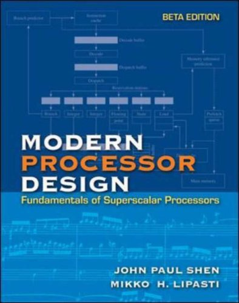

Advanced Computer Architecture
Welcome to the alternative notes page for ELEC3020.
This page is a vain attempt to produce something that is a bit easier to revise from.
Lecture slides
Denis provided us with PPTs – this angers me; so I stuck up these PDFs.
I think that the references are probably as important as the slides!
- Week 1:
- Introduction
Gives a brief overview of the course; Some administrative content. In
lecture there was also discussion of Quantum Computing: mention of
factorisation algorithms for RSA decryption and solid state NMR quantum
computers.
- Early history
Talks about the classical history of computers stuff. Manchester Mk II and
pals. Seems to take a very British view of the World (I don't know how
realistic this way of looking at stuff is).
- Bus stuff
A few slides about buses and their disadvantages. With mention of the need
for proper termination. Difficulties with termination, with maintaining a
constant impedance on the bus and with excessive capacitive loading by bus
cards can make bus turn-around rather slow.
- Week 2:
- Week 3:
- Pipelining
Slides from MIT, talk about pipelining. Seem to be generally very
low-level: clocks and other things at that level.
Apparently, we spent some time discussing low-level hardware issues,
including a simple sound driver, and CMOS latch-up.
- Pipeline latching
We looked at a bit of pipeline latching. Got a pair of pretty logic gate
diagrams. I bet the Elecs love this stuff.
-
Memory Hierarchy
Not sure if this is the right slide set, but it looks relevant, talks about
caching mainly. (Was a broken link on Denis' page)
-
Cache
Seems to also talk mostly about caches, may well be very similar to the one
above; Having looked briefly I believe it to be the same material, but less
comical. :(
- References
Week 4:
- Superscalar Processing
Talks about instruction level parallelism employed on most modern processors.
- ARM lecture - Does this exist? I cannot find it :/
- The Pentium and Pentium Pro
Talks about the Pentium and Pentium Pro Processors mainly about features
such as superscalar execution, pipelining and branch prediction.
- Pentium Branch Prediction
Disscusses the branch prediction techniques used in the Pentium family of processors.
- References
Week 5:
- The Pentium 4
A very quick an superficial look at the architecture of a "modern" processor,
as an example of recent over complexification.
- References
Week 6:
- Buses
Fairly long slide set on Buses: What they are, why they are good, why they
suck and how they work.
- References
Week 7: - Novel Architectures - Now defunct!
Week 8: (Possibly defunct)
Week 9 & 10: - Networky stuff - Now defunct!
Week 11: New architectures and processors
- iA32 developments
The legacy 8087 stack-based floating point operations of the older iA32
processors are being superseded by SIMD operations on 16 byte registers
in the SSE (Streaming SIMD Extensions) and SSE2 instructions introduced
in the Pentium III and Pentium 4. SSE2 will operate on blocks of four
floats, two doubles, or sixteen bytes worth of any integer type and also
offer prefetch and other instructions for cache control.
- References
Sotonpedia
Oly Bills produced some notes here.
He also produced notes for the first year course,
here
Recorded lectures
Not entirely relevent, but might be good to listen to this stuff while
walking:
Lectures from other Universities
Labwork
We didn't actually do any labwork, but it might be worth having a look at what
they did do. The labwork description is here.
Reading
|
 |
If you can find a copy of this book, read
Modern Processor Design by J P Shen
and M H Lipasti, pub McGraw Hill 2003, ISBN 0-07-282968-0 or 0-07-123007-6.
|
Ian McNally's old notes.
© 2000–2008 Denis A Nicole and the University of Southampton
dan@ecs.soton.ac.uk.
Revised by Edward JF Seabrook May 2013.
ejfs1g10@ecs.soton.ac.uk